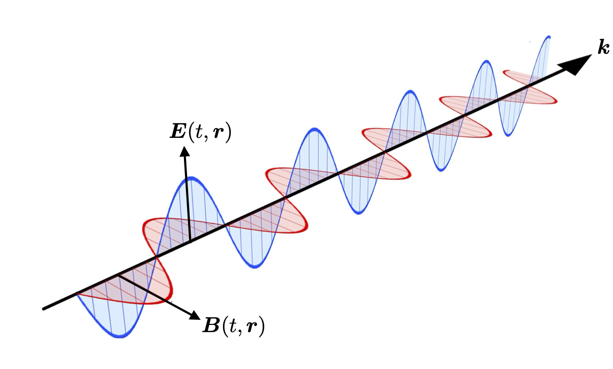

11 Revision of Electromagnetism
In this lecture we will start the final part of the course. Our aim is to examine how electromagnetism is formulated in a relativistically covariant way, and interpret it in the language of Lagrangian field theory. Before we do so, however, we will quickly revise basic facts about the electromagnetic field without relativistic considerations, most of which will hopefully be familiar.
11.1 Maxwell’s equations
The diverse electric and magnetic phenomena observed in the 18th and 19th centuries, such as Gauss’s law, Faraday’s law and Ampère’s law, were summarized clearly by Maxwell in the late 1800s, who also realized a term needed to be added to Ampère’s law involving the time dependence of \(\boldsymbol{E},\) a “displacement current”.
The four ‘Maxwell equations’ therefore describe all electromagnetic phenomena, and Maxwell realized that light itself is such a phenomenon. The view of physics at the end of the 19th century was therefore that all physics is either mechanics (as described by Newton-Lagrange-Hamilton), or electromagnetic (as described by Maxwell). However, Maxwell’s equations do not transform covariantly under Galilean transformations. Finding the set of transformations under which they do transform covariantly was Einstein’s main motivation for introducing special relativity, as we discussed back in the first lecture.
In modern (3-vector) notation, in free space, Maxwell’s equations are:
| Differential form | ||
|---|---|---|
| \(\nabla \cdot \boldsymbol{B} = 0\) | (M1) | Gauss’s law for magnetic field |
| \(\nabla \times \boldsymbol{E} + \dot{\boldsymbol{B}} = 0\) | (M2) | Faraday’s law |
| \(\varepsilon_0 \nabla \cdot \boldsymbol{E} = \rho\) | (M3) | Gauss’s law for electric field |
| \(\mu_0^{-1} \nabla \times \boldsymbol{B} - \varepsilon_0 \dot{\boldsymbol{E}} = \boldsymbol{j}\) | (M4) | Maxwell-Ampère law |
Notice that two of the equations (M1) and (M3) are scalar equations, while (M2) and (M4) are vector equations. The first two equations (M1) and (M2) are homogenous and express how the electric and magnetic fields are related to each other regardless of the presence of charges and currents. In particular (M1) indicates that there are no magnetic charges (or monopoles). Together (M3) and (M4) are inhomogeneous equations with (M3) showing how the electric field depends on the scalar electric charge density \(\rho(t,\boldsymbol{r})\). Equation (M4) shows how the electric and magnetic field depend on a vector current density \(\boldsymbol{j}(t,\boldsymbol{r}).\) For point charges, \(\rho\) and \(\boldsymbol{j}\) are given by \(\delta\)-functions.
The constants \(\varepsilon_0\) and \(\mu_0\) are called, respectively, the permittivity and permeability of free space. Looking at the physical dimensions of the quantities in (M3) and (M4), one can see that they may be combined to give a constant with the units of speed, \[ c \equiv \frac{1}{\sqrt{\varepsilon_0 \mu_0}} = 2.9979 \times 10^8 \, \mathrm{m\,s}^{-1}, \] which Maxwell noticed was within known error of the measured speed of light at the time.
In free-space where there are no charges \(\rho = 0\) or current \(\boldsymbol{j}=0\) Maxwell’s equations take on a very symmetrical form for the scalar \[ \nabla \cdot \boldsymbol{B} = 0, \quad \nabla \cdot \boldsymbol{E} = 0 \] and vector equations \[ \nabla \times \boldsymbol{B} = \frac{1}{c^2} \dot{\boldsymbol{E}}, \quad \nabla \times \boldsymbol{E} = -\dot{\boldsymbol{B}}. \]
Maxwell’s equations can also be written down in integral form. These forms imply the differential versions above (using formulas and theorems from vector calculus); they are equivalent if we allow \(\delta\)-functions in the charge and current distributions in both the differential and integral forms. Explicitly, the integral forms of Maxwell’s equations are:
| Integral form | ||
|---|---|---|
| \(\oint_{\mathcal{S}}\mathrm{d}^2\boldsymbol{S}\cdot\boldsymbol{B} = 0\) | (M1’) | Net flux of magnetic field through closed surface \(\mathcal{S}\) is zero |
| \(\partial_t \iint_{\mathcal{S}}\mathrm{d}^2\boldsymbol{S}\cdot\boldsymbol{B} = - \oint_{\partial \mathcal{S}}\mathrm{d}\boldsymbol{\ell}\cdot\boldsymbol{E}\) | (M2’) | Rate of change of the flux of \(\boldsymbol{B}\) through surface \(\mathcal{S}\) is minus the line integral of \(\boldsymbol{E}\) around boundary curve of the surface \(\partial \mathcal{S}\) |
| \(\varepsilon_0 \oint_{\partial\mathcal{V}}\mathrm{d}^2\boldsymbol{S}\cdot\boldsymbol{E} = \int_{\mathcal{V}} \mathrm{d}^3\boldsymbol{r}\, \rho\) | (M3’) | Net flux of \(\boldsymbol{E}\) through closed surface \(\partial\mathcal{V}\) equals the total charge in enclosed volume \(\mathcal{V}\) |
| \(\mu_0^{-1} \oint_{\partial \mathcal{S}} \mathrm{d}\boldsymbol{\ell} \cdot\boldsymbol{B} = \varepsilon_0 \partial_t \int_{\mathcal{S}}\mathrm{d}^2\boldsymbol{S}\cdot\boldsymbol{E}+ \int_{\mathcal{S}}\mathrm{d}^2\boldsymbol{S}\cdot\boldsymbol{j}\) | (M4’) | Total current flowing through the surface \(\mathcal{S}\) plus rate of change of the flux of \(\boldsymbol{E}\) through \(\mathcal{S}\) equals the line integral of \(\boldsymbol{B}\) around boundary curve of the surface \(\partial \mathcal{S}\) |
With these two sets of Maxwell equations, physical properties of electromagnetic fields, and their sources, can be derived. For instance, the RHS of (M3’) is the total charge enclosed in a volume \(\mathcal{V}.\) How does this change in time?
We can see how by taking the time derivative of (M3’), whose LHS involves the first term on the RHS of (M4’), after commuting the surface integral with the time derivative. The boundary of a 3-volume is a closed 2-surface, which clearly does not itself have a boundary. Therefore, if we use \(\partial V\) as \(\mathcal{S}\) in (M4’), its boundary \(\partial(\partial\mathcal{V}) = 0,\) and the LHS vanishes. Therefore, our expression is minus the flux of \(\boldsymbol{j}\) through the boundary \(\partial\boldsymbol{V}\) of our volume. This only leaves the flux of the current through the volume’s boundary \(\partial\mathcal{V},\) \[\partial_t \int_{\mathcal{V}} \mathrm{d}^3\,\boldsymbol{r} \rho = - \oint_{\partial\mathcal{V}}\mathrm{d}^2\boldsymbol{S}\cdot\boldsymbol{j}.\] Using the divergence theorem, this can be rearranged to give \[ \boxed{\dot{\rho} + \nabla\cdot\boldsymbol{j} = 0. \qquad\textit{The Continuity equation}} \] This equation encapsulates the conservation of charge, as we saw earlier in the lecture Plane-waves and particle flow.
11.2 Lorentz force and electromagnetic energy
Maxwell’s equations describe the dynamics of the electromagnetic field \(\boldsymbol{E}\) and \(\boldsymbol{B}\) due to the position and motion of electric charges, given by \(\rho\) and \(\boldsymbol{J}.\) Together with the Lorentz force law for the force experienced by a particle of charge \(q\) moving at velocity \(\boldsymbol{v}\) \[ \boxed{\boldsymbol{f} = q(\boldsymbol{E} + \boldsymbol{v} \times \boldsymbol{B}), \qquad{\textit{The Lorentz Force law}}} \] we can find equations of motion for the charges, which must be solved self-consistently with Maxwell’s equations to tell us about the entire system of interacting matter and fields. We recall that a force is defined \(\boldsymbol{f} = m \ddot{\boldsymbol{r}} = m \dot{\boldsymbol{v}} = m \boldsymbol{a} = \dot{\boldsymbol{p}}\) where \(m, \boldsymbol{r}, \boldsymbol{a}, \boldsymbol{p},\) are the particle’s mass, position, acceleration and momentum respectively.
The Lorentz force law shows that the electric field does work on charges (since the charge’s acceleration (\(\propto \boldsymbol{f}\)) is perpendicular to its velocity and hence its instantaneous displacement in \(\mathrm{d}t\)). Therefore the EM field contains energy which is imparted to charges via the Lorentz force law. The infinitesimal work done by \(\boldsymbol{E}\) in moving a charge \(q\) by \(\mathrm{d}\boldsymbol{r}\) is therefore \(q\boldsymbol{E}\cdot\mathrm{d}\boldsymbol{r}.\) The instantaneous rate this work is done, since \(\boldsymbol{v} = \mathrm{d}\boldsymbol{r}/\mathrm{d}t,\) is \(q \boldsymbol{E}\cdot\boldsymbol{v}.\) Since \(q \boldsymbol{v} \to \boldsymbol{j}\) in the continuum limit, the rate work is done in a volume \(\mathcal{V}\) is therefore \[ \begin{align} \int_{\mathcal{V}}\mathrm{d}^3\boldsymbol{r} \, \boldsymbol{E}\cdot\boldsymbol{j} & \overset{\mathrm{(M4)}}{=} \int_{\mathcal{V}}\mathrm{d}^3\boldsymbol{r} \, \boldsymbol{E}\cdot(\mu_0^{-1}\nabla\times\boldsymbol{B} - \varepsilon_0 \dot{\boldsymbol{E}}) \\ & = -\int_{\mathcal{V}}\mathrm{d}^3\boldsymbol{r} \, \left[ \mu_0^{-1} \nabla \cdot(\boldsymbol{E} \times \boldsymbol{B}) + \varepsilon_0 \boldsymbol{E}\cdot\dot{\boldsymbol{E}} + \mu_0^{-1} \boldsymbol{B}\cdot\dot{\boldsymbol{B}}\right], \end{align} \] where the second equality follows by applying (M2) and the vector calculus relation \[ \nabla\cdot(\boldsymbol{E}\times\boldsymbol{B}) = \boldsymbol{B}\cdot(\nabla\times\boldsymbol{E}) - \boldsymbol{E}\cdot(\nabla\times\boldsymbol{B}). \]
In the equation for rate of work done, using the divergence theorem, the term in square brackets can be rearranged to look like a continuity equation for the energy in an electromagnetic field, that is, with \[ \boxed{W = \tfrac{1}{2}(\varepsilon_0 |\boldsymbol{E}|^2 + \mu_0^{-1} |\boldsymbol{B}|^2), \qquad{\textit{Electromagnetic energy density}} } \] and we define the Poynting vector as \[ \boxed{\boldsymbol{S} = \mu_0^{-1} \boldsymbol{E} \times \boldsymbol{B}, \qquad{\textit{Electromagnetic flux density}}} \] allowing the work done per unit volume by electromagnetic fields on charges to be expressed as \[ \boxed{\nabla\cdot\boldsymbol{S} + \dot{W} = -\boldsymbol{j}\cdot\boldsymbol{E}. \qquad{\textit{Poynting's theorem}}} \] Although the LHS looks like a continuity equation for energy, it is not zero on the RHS, since EM energy transferred to charges is not conserved in the EM field by itself.
11.3 Solutions of Maxwell’s equations without sources
For fields without sources (charges and currents), Maxwell’s equations are homogeneous and linear, and have a simple mathematical form in terms of their Fourier transforms. Assuming \(\rho = 0\) and \(\boldsymbol{j} = 0,\) derivatives can be taken of (M1)-(M4) which can then be combined to give \[ \nabla^2 \boldsymbol{E} - c^{-2} \ddot{\boldsymbol{E}} = 0, \qquad \nabla^2 \boldsymbol{B} - c^{-2} \ddot{\boldsymbol{B}} = 0, \] i.e. the three components of each of \(\boldsymbol{E}\) and \(\boldsymbol{B}\) satisfy d’Alembert’s wave equation, at speed \(c.\)
Fourier analysis now tells us that each component of \(\boldsymbol{E}\) and \(\boldsymbol{B}\) can be written as a superposition of plane waves. We can write the Fourier transforms as vectors \(\boldsymbol{E}(\omega,\boldsymbol{k}),\) \(\boldsymbol{B}(\omega,\boldsymbol{k}),\) so the fields are written \[ \begin{align} \boldsymbol{E}(t,\boldsymbol{r}) & = \int_{|\omega| = c |\boldsymbol{k}|} \mathrm{d}^3\boldsymbol{r}\mathrm{d}\omega \, \boldsymbol{E}(\omega,\boldsymbol{k}) \exp(\mathrm{i}(\boldsymbol{k}\cdot\boldsymbol{r}-\omega t)), \\ \boldsymbol{B}(t,\boldsymbol{r}) & = \int_{|\omega| = c |\boldsymbol{k}|} \mathrm{d}^3\boldsymbol{r}\mathrm{d}\omega \, \boldsymbol{B}(\omega,\boldsymbol{k}) \exp(\mathrm{i}(\boldsymbol{k}\cdot\boldsymbol{r}-\omega t)), \end{align} \] where the (complex) Fourier transforms are such that the electric and magnetic fields are real. In practice, is is often more convenient to work with the positive frequency parts of the fields, imposing \(\omega > 0\) and the physical fields are the real parts of these complex fields. We think of the vectors \(\boldsymbol{E}(\omega,\boldsymbol{k}), \boldsymbol{B}(\omega,\boldsymbol{k})\) as the polarization of the plane wave component labelled by \(\omega\) and \(\boldsymbol{k}.\)

If the electromagnetic field is a single plane wave, with polarization vectors \(\boldsymbol{E}_0\) and \(\boldsymbol{B}_0,\) then Maxwell’s equations imply that \(\boldsymbol{E}_0, \boldsymbol{B}_0\) and \(\boldsymbol{k}\) are orthogonal, with \((\boldsymbol{E}_0, \boldsymbol{B}_0,\boldsymbol{k})\) forming a right-handed triad. Thus the Poynting vector \(\boldsymbol{S}\) is along \(\boldsymbol{k},\) which agrees with our intuition that the direction of a plane wave in free space is its direction of energy flux. These electromagnetic fields propagating in empty space are interpreted as none other than light waves, and they propagate at \(c\). Historically, this realization led to the discovery of other regimes of the electromagnetic spectrum, including radio waves, microwaves, X-rays and so on.
11.4 Potentials and gauge transformations
By Faraday’s law (M2), in the electrostatic case (no currents, and all time derivatives vanish), \(\nabla \times \boldsymbol{E}_{\mathrm{stat}} = 0,\) so the electrostatic \(\boldsymbol{E}_{\mathrm{stat}}\) is a potential field \(\boldsymbol{E}_{\mathrm{stat}} = -\nabla V.\) The scalar field \(V = V(\boldsymbol{r})\) is called the electric potential, analogous to Newton’s gravitational potential. The negative sign ensures that the potential increases as a positive charge is approached. In general, for a line integral between points \(A\) and \(B,\) \[-\int_A^B \mathrm{d}\boldsymbol{\ell}\cdot\boldsymbol{E}_{\mathrm{stat}} = V_B - V_A,\] so only the ‘potential difference’ between points has significance.
However, the rules of vector calculus also give that if the divergence of a vector field vanishes everywhere, it is the curl of a vector field. Therefore, from (M1), we always have \[ \boxed{\boldsymbol{B} = \nabla\times\boldsymbol{A},} \] and \(\boldsymbol{A}\) is called the magnetic vector potential. From (M2), we can see that \[ \nabla \times \boldsymbol{E} = - \dot{\boldsymbol{B}} = - \nabla \times \dot{\boldsymbol{A}}, \] so the combined vector field \(\boldsymbol{E}+\dot{\boldsymbol{A}}\) is curl-free, and we can re-introduce the scalar potential \(V\) so that \[ \boxed{\boldsymbol{E} = - \dot{\boldsymbol{A}} - \nabla V.} \] Clearly, in the electrostatic case, \(\boldsymbol{A}\) is not changing, and so \(V\) becomes the usual electrostatic scalar potential.
Just like the electric potential, the magnetic vector potential is not defined absolutely. However, its ambiguity is wider than just adding a constant since adding the gradient of any scalar field \(\chi\) (whose curl must vanish) cannot change the physics. Since \(\boldsymbol{E}\) is a physical field, it cannot be affected by including \(\chi\), which implies the general gauge transformation rule of transformations of potentials which do not change physical fields is \[ \boxed{\boldsymbol{A} \to \boldsymbol{A} + \nabla\chi, \qquad V \to V - \dot{\chi}. \qquad{\textit{Gauge transformation}}} \tag{11.1}\] We say that the electromagnetic field is invariant under gauge transformations.
Despite the ambiguity in their definition, the potentials \(V, \boldsymbol{A}\) are often seen as more fundamental than the electromagnetic fields \(\boldsymbol{E}, \boldsymbol{B}.\) For instance, they occur in the Lagrangian for the Lorentz force (see next section), through which EM fields affect charges. In modern physics, this is usually interpreted as the following: No physical experiment can determine absolutely the value of \(V\) and \(\boldsymbol{A}\) since we can perform any gauge transformation without affecting the physics. Thus a physical phenomenon admits many different possible vector potential fields, related to each other by gauge transformations. This viewpoint should feel familiar, as it is identical to our view of inertial frames being related through Lorentz transformations.
The ambiguity in the potentials can be reduced by choosing \(\chi\) to satisfy an additional relation. This is called gauge fixing, and an important, albeit non-covariant, choice is \[ \boxed{\nabla\cdot\boldsymbol{A} = 0. \qquad{\textit{Coulomb or Transverse gauge}}} \] In the Coulomb gauge, a plane wave has \(\boldsymbol{A}\) parallel to \(\boldsymbol{E},\) and so perpendicular (transverse) to the wavevector \(\boldsymbol{k}.\)
We have effectively used (M1) and (M2) to define the potential fields \(\boldsymbol{A}\) and \(V.\) We now consider how (M3) and (M4) give relationships between sources and electromagnetic potentials. In any gauge (M3) becomes \[ \nabla^2V + \nabla\cdot\dot{\boldsymbol{A}} = - \frac{\rho}{\varepsilon_0}, \] and in the Coulomb gauge, \(\nabla\cdot\boldsymbol{A} = 0\) always, so its time derivative is also zero. Thus in the Coulomb gauge, the scalar potential returns to its role as a potential field for the charge density \(\rho,\) satisfying \[ \boxed{\nabla^2V = - \frac{\rho}{\varepsilon_0}. \qquad{\textit{Poisson's equation}}} \] For a point charge \(q\) at the origin, \(\rho = q\delta(\boldsymbol{r}),\) and in this case \(V = q/(4\pi \varepsilon_0 |\boldsymbol{r}|).\)
For any gauge (M4) becomes \[ \mu_0^{-1} \nabla \times (\nabla \times \boldsymbol{A}) - \varepsilon_0(-\ddot{\boldsymbol{A}} - \nabla \dot{V}) = \boldsymbol{j}, \] which, after vector field manipulations and substituting \(\varepsilon_0 \mu_0 = c^{-2},\) becomes \[ \nabla^2\boldsymbol{A} - c^{-2}\ddot{\boldsymbol{A}} - \nabla(\nabla\cdot\boldsymbol{A} + c^{-2} \dot{V}) = -\mu_0 \boldsymbol{j}. \] This does not take a particularly convenient form in the Coulomb gauge since it involves both \(\boldsymbol{A}\) and \(V\). However, with the following way of fixing the gauge, \[ \boxed{\nabla\cdot\boldsymbol{A} + c^{-2} \dot{V} = 0, \qquad{\textit{Lorenz gauge}}} \] after substitution of (M4) into (M3), \(V\) and \(\boldsymbol{A}\) are decoupled, giving \[ \boxed{\begin{array}{ccc} \nabla^2 V - c^{-2} \ddot{V} & = & - \rho/\varepsilon_0, \\ \nabla^2 \boldsymbol{A} - c^{-2} \ddot{\boldsymbol{A}} & = & - \mu_0 \boldsymbol{j}. \end{array}} \] Thus in terms of the potentials, Maxwell’s equations are inhomogeneous d’Alembert equations, whose sources are the electric charge and current densities. In the absence of charges, \(V\) and each component of \(\boldsymbol{A}\) satisfy the regular d’Alembert equation. These latter equations are different from the d’Alembert equation for the electromagnetic fields themselves. After fixing the Lorenz gauge, Maxwell’s equations become the inhomogeneous d’Alembert equation in terms of potentials, whereas we took extra derivatives on Maxwell’s equations to make the EM fields themselves satisfy the wave equation.
11.5 Lagrangian for the Lorentz force
Let us finish this revision lecture by looking at how the Lorentz force can be accounted for in the Lagrangian and Hamiltonian formulation of non-relativistic mechanics. Take a particle with charge \(q,\) moving in an electromagnetic field with electric field \(\boldsymbol{E}\) and magnetic field \(\boldsymbol{B},\) experiences the Lorentz force law \[ \boxed{\boldsymbol{f} = q(\boldsymbol{E} + \boldsymbol{v} \times \boldsymbol{B}). \qquad\hbox{\textit{The Lorentz force law}}} \tag{11.2}\] This is the equation of motion for the particle, with mass \(m,\) position \(\boldsymbol{r},\) velocity \(\dot{\boldsymbol{r}},\) and acceleration \(\ddot{\boldsymbol{r}},\) so \(\boldsymbol{f} = m\ddot{\boldsymbol{r}}.\) As the most fundamental response of charged matter to electromagnetic fields, it is one of the most important equations in this course. In the electrostatic case (i.e. \(\boldsymbol{B} = 0, \boldsymbol{E} = -\nabla V\)), the Lagrangian is simply \(\tfrac{1}{2}m|\boldsymbol{v}|^2 - qV\), as might be expected.
However, more generally when fields are changing and charges are moving, we have a magnetic field, and \(\boldsymbol{B},\boldsymbol{E}\) can be expressed as follows in terms of the scalar potential \(V\) and vector potential \(\boldsymbol{A}\): \[ \boldsymbol{B} = \nabla \times \boldsymbol{A}, \qquad \boldsymbol{E} = -\nabla V - \dot{\boldsymbol{A}}, \] as discussed earlier. The electrostatic Lagrangian, giving a force proportional to \(\boldsymbol{E},\) involved \(V.\) The Lorentz equation involves \(\boldsymbol{B}\) as well, so its Lagrangian should involve \(\boldsymbol{A},\) related in some way to \(\boldsymbol{v}.\)
As an ‘educated guess’, we try adding the scalar \(\boldsymbol{v}\cdot\boldsymbol{A}\) to the Lagrangian. The Euler-Lagrange equations for \[ \boldsymbol{r} = \begin{pmatrix} x^1\\ x^2\\ x^3 \end{pmatrix}, \quad {\rm and} \quad \boldsymbol{v} = \begin{pmatrix} \dot{x}^1\\ \dot{x}^2\\ \dot{x}^3 \end{pmatrix} \] then involve \[ \frac{\partial(\boldsymbol{v}\cdot\boldsymbol{A})}{\partial x^j} = \boldsymbol{v}\cdot(\partial_j \boldsymbol{A}) = \delta_{k\ell}\, v^k \partial_j A^{\ell}, \] and \[ \frac{\partial(\boldsymbol{v}\cdot\boldsymbol{A})}{\partial \dot{x}^j} = \frac{\partial(\delta_{k\ell}v^k A^{\ell})}{\partial v^j} = \delta_{j\ell}\, A^{\ell}, \] for \(j = 1,2,3,\) where we have employed the summation convention. In the second expression, only the derivative in the term with index \(j\) remains from the sum over \(k.\)
Now, we have to make sure that as the particle moves, it experiences the field at its new position, rather than its old position (i.e. the field in the comoving frame of the particle). This is ensured from the definition of the total derivative, with respect to \(t,\) of a function dependent on \(t\) and \(\boldsymbol{r},\) again employing the summation convention, \[ \frac{\rm d}{{\rm d} t} \bullet = \frac{\partial}{\partial t} \bullet + \frac{\partial x^j}{\partial t} \partial_j \bullet = \dot{\bullet} + \boldsymbol{v}\cdot \nabla \bullet. \] This quantity is sometimes called the convective derivative. With this, we can write the part of the Euler-Lagrange equations involving \(\boldsymbol{v}\cdot\boldsymbol{A},\) for \(j = 1,2,3,\) as \[ \begin{align} \frac{\partial (\boldsymbol{v}\cdot\boldsymbol{A})}{\partial x^j} - \frac{\rm d}{{\rm d} t}\frac{\partial (\boldsymbol{v}\cdot\boldsymbol{A})}{\partial \dot{x}^j} & = \boldsymbol{v}\cdot\partial_j \boldsymbol{A} - \delta_{j\ell}\, \dot{A}^{\ell} - \delta_{j\ell} \boldsymbol{v}\cdot\nabla A^{\ell} \\ & = - \delta_{j\ell}\, \dot{A}^{\ell} + \delta_{k\ell}\, v^k \partial_j A^{\ell} - \delta_{j \ell}\, v^k \partial_k A^{\ell} \\ & = - \delta_{j\ell}\, \dot{A}^{\ell} + v^k\left(\partial_j (\delta_{k\ell} \,A^{\ell}) - \partial_k (\delta_{j \ell}A^{\ell})\right) \\ & = - \dot{A}_j + v^k\left(\partial_j A_k - \partial_k A_j \right), \end{align} \] where in the last line, we have written \(\boldsymbol{A}\) in covariant components, \(A_k = \delta_{k\ell} \,A^{\ell}.\) The term in the brackets can be rearranged using \(\delta\) tensors, which themselves can be substituted with antisymmetric symbols, \[ \partial_j A_k - \partial_k A_j = (\delta_{jm} \delta_{kn} - \delta_{jn} \delta_{km}) \partial^m A^n = \delta^{i\ell}\varepsilon_{ijk} \varepsilon_{\ell mn} \partial^m A^n = \varepsilon_{jk\ell} B^{\ell}, \] where \(\boldsymbol{B}\) was substituted as the curl of \(\boldsymbol{A},\) which is \(B_{\ell} = \varepsilon_{\ell mn} \partial^m A^n\) in component form. At last, we can write \[ \frac{\partial (\boldsymbol{v}\cdot\boldsymbol{A})}{\partial \boldsymbol{r}} - \frac{\rm d}{{\rm d} t}\frac{\partial (\boldsymbol{v}\cdot\boldsymbol{A})}{\partial \boldsymbol{v}} = - \dot{\boldsymbol{A}} + \boldsymbol{v} \times \boldsymbol{B}. \] From this result, it is straightforward to verify that the Lorentz force law follows from the Lagrangian \[ \boxed{L = \tfrac{1}{2}m \boldsymbol{v}\cdot\boldsymbol{v} - q V + q \boldsymbol{v}\cdot\boldsymbol{A}. \qquad\hbox{\textit{Lorentz force Lagrangian}}} \tag{11.3}\] Clearly, this Lagrangian cannot be interpreted directly as KE \(-\) PE (as if the force is just a gradient of some potential) but it nonetheless gives the correct equation of motion.
A very important consequence of the above is that, for a particle experiencing the Lorentz force, the canonical momentum conjugate to \(r_j\) is not \(m v_j\). It should be straightforward for you to check that, from the definition of canonical momentum and the Lorentz force Lagrangian, \[ \boxed{\boldsymbol{p} = m \boldsymbol{v} + q \boldsymbol{A}. \qquad\hbox{\textit{Canonical momentum for Lorentz force}} } \] However, the total energy for a charged particle in an electromagnetic field is \(\tfrac{1}{2}m v^2 + q V(\boldsymbol{r}),\) implying that the corresponding Hamiltonian is \[ H = \frac{1}{2m}(\boldsymbol{p}-q \boldsymbol{A})^2 + q V. \]
You might feel unconvinced by this argument. After all, how do we know that we could not just invent some other Lagrangian which would also do the job, maybe not including those strange and maybe not completely physical objects, the potentials? Maybe we could find one whose canonical momentum is the usual kinetic momentum? No one has found such an alternative which could be taken as telling us that the potentials are in fact a fundamental concept.
What we learn from this Lagrangian formulation of the mechanics of the Lorentz force law is that electromagnetic potentials are crucial. This will be a guiding principle in the next few lectures where we will develop a relativistic Lagrangian formulation not just of the charged particle but also of the electromagnetic field itself.